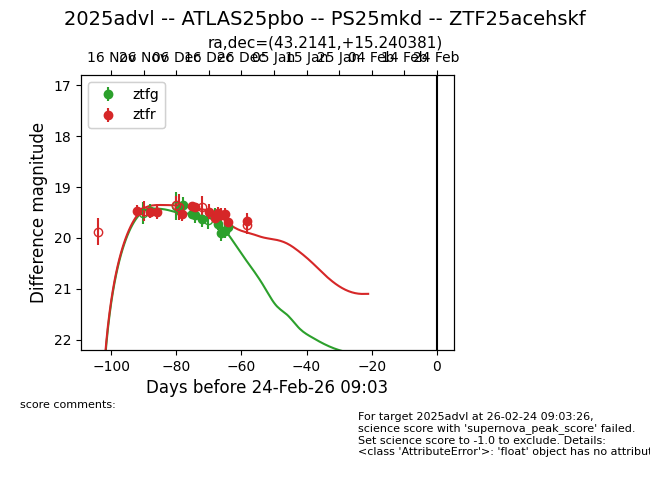
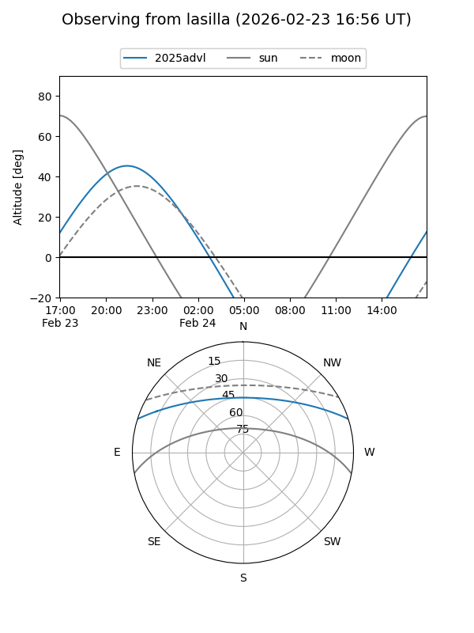
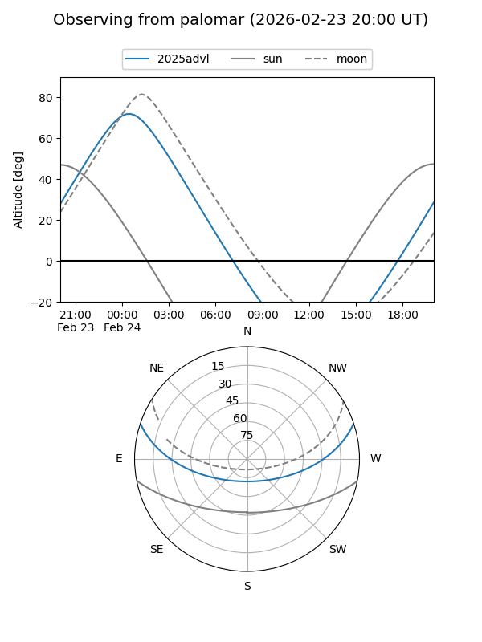
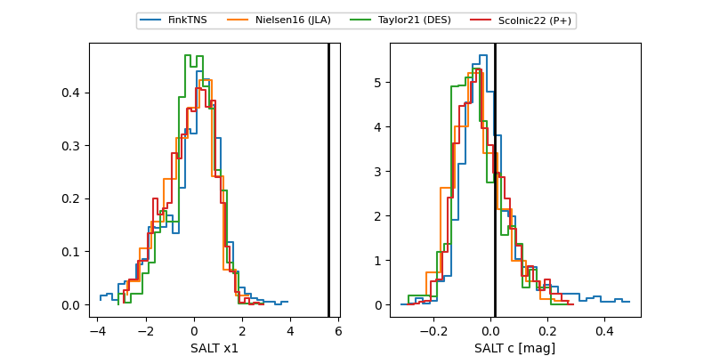

2025advl
Target 2025advl at 2025-12-19 06:09
Aliases and brokers:
FINK: fink-portal.org/ZTF25acehskf
Lasair: lasair-ztf.lsst.ac.uk/objects/ZTF25acehskf
ALeRCE: alerce.online/object/ZTF25acehskf
TNS: wis-tns.org/object/2025advl
YSE: ziggy.ucolick.org/yse/transient_detail/2025advl
alt names
ZTF25acehskf (ztf,fink_ztf)
2025advl (tns,yse)
Coordinates:
equatorial (ra, dec) = 43.2141,+15.24038
equatorial (HMS+DMS) = 02:52:51.39,+15:14:25.37
galactic (l, b) = (161.4038,-38.39726)
Flags:
Photometry:
last ztfg=19.72, ztfr=19.61
8 ztfg, 8 ztfr detections
Lightcurve

Visibility


Additional plots
